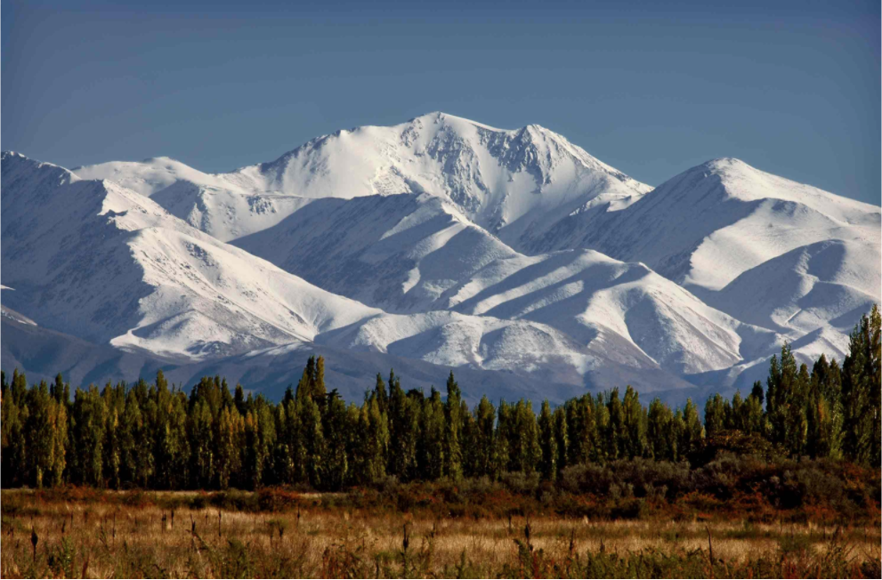

26
ENERO
Bariloche
Vie., 20 Oct. 2017, 16:00 – Sáb., 21 Oct. 2017, 13:00
6
ENERO
Locación nacional
Vie., 20 Oct. 2017, 16:00 – Sáb., 21 Oct. 2017, 13:00
18
AGOSTO
Locación nacional
Vie., 20 Oct. 2017, 16:00 – Sáb., 21 Oct. 2017, 13:00
12
SEPTIEMBRE
Locación nacional
Vie., 20 Oct. 2017, 16:00 – Sáb., 21 Oct. 2017, 13:00
Información turística
En toda la Argentina (y gran parte del mundo) Mendoza es sinónimo de buenos vinos. La provincia tiene más de 130 bodegas y viñedos e infinitas posibilidades para hacer degustaciones y almuerzos. El camino de los vinos mendocino tiene, además, una vista única a la Cordillera de los Andes y al pico más alto de América, el Cerro Aconcagua. Con sus anchas avenidas arboladas, la capital es el punto de partida ideal para visitar montañas, ríos, termas y viñedos de la provincia.
Pie de la foto
Sus principales actividades productivas son la agricultura, la ganadería y la producción vitivinícola, que ha adquirido un gran prestigio a nivel internacional.
En avión: El Aeropuerto Internacional Francisco Gabrielli está a 10km de la capital. La duración del vuelo desde la Ciudad de Buenos Aires es de aproximadamente dos horas.
Por tierra: Un viaje desde Ciudad de Buenos Aires a Mendoza en ómnibus toma alrededor de 14 horas.
Los Caminos del Vino: tienen más de 130 bodegas abiertas al turismo, donde se puede pasar la noche, almorzar, hacer vino, recorrer viñedos en bicicleta, a caballo o en autos antiguos o hasta simplemente visitar, para descubrir los secretos de la elaboración del vino.
Las Termas de Cacheuta: a solo a 45 km de la ciudad de Mendoza, es un parque con aguas termales de origen natural.
El Cerro Aconcagua: el cerro más alto de América, está a 192 km de la capital. Es un espacio ideal para practicar trekking y andinismo.
Las Leñas es uno de los centros de esquí más importantes de Latinoamérica.
Los típicos platos mendocinos son los pasteles fritos, las empanadas, la carne a la olla y las famosas tortitas raspadas para el desayuno o merienda. También se puede degustar el tradicional asado argentino.